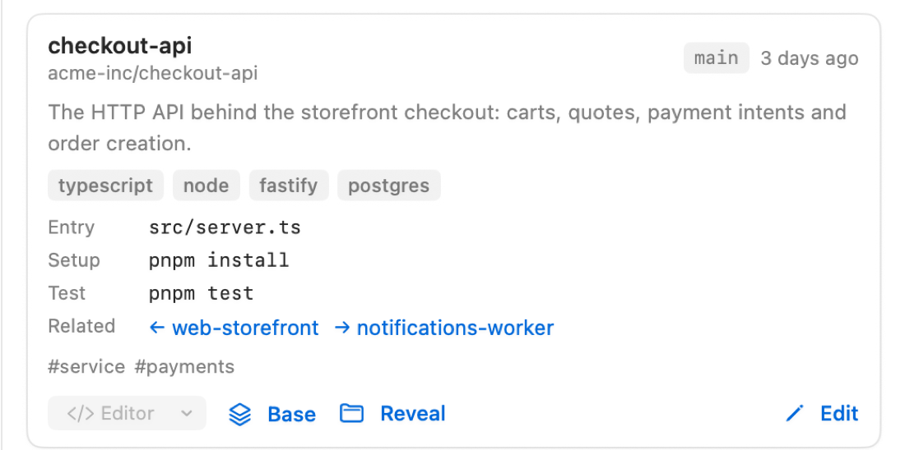
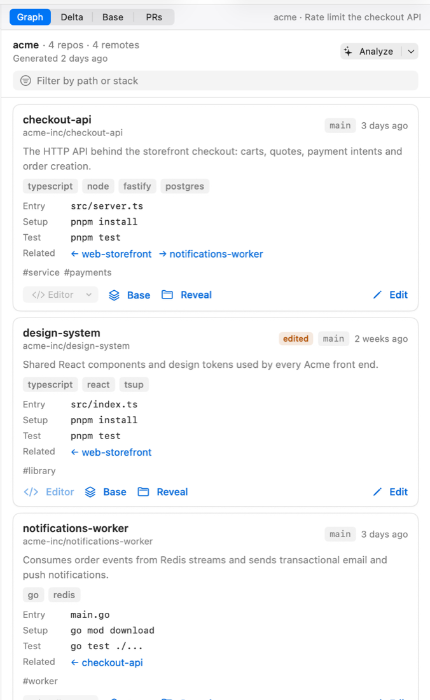

The repository graph
One card per repository: what it is for, what it is built with, how to set it up and test it, and which repositories it talks to. It is what Scope hands to an agent when a task starts.

Two levels of generation
| Level | Source | Fills |
|---|---|---|
| Level 0 | README, manifests (package.json, go.mod, Cargo.toml…), git log | name, remote, default branch, stack, entry points, setup and test commands, last activity |
| Level 1 | the default driver, run headless once per repository | the purpose sentence, the relations between repositories, tags |
Analyze in the panel header runs both; the split button runs level 0 alone, which needs no agent and no network. Results are cached per repository, keyed by HEAD plus the hashes of the README and manifests, so re-analysing an unchanged repository costs nothing.
Editing a card
Edit on any card opens the fields for hand-editing. An edited card is marked and generation never overwrites it again — the graph is a document you own, not a cache the app owns.

Cards are stored as one JSON file per scope in ~/.scope/graph/<scope-slug>.json. Editing
that file by hand works too; Refresh Scope (⌘R) picks it up.
How agents see it
When a task is created, the cards of the repositories it touches are projected into the task's
AGENTS.md, under the goal. The agent starts knowing what each repository is for, how to install
it and how to run its tests, instead of spending its first minutes rediscovering that.
Finding things
The filter field above the cards matches path and stack at once: type go to get the Go
services, api to get everything whose path says so.